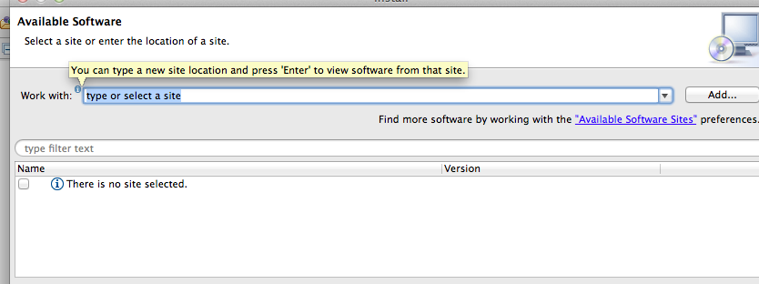
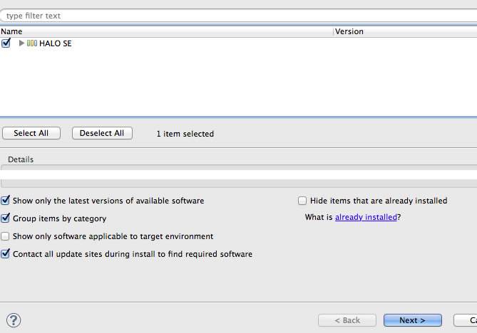

Installing HALO-SE
Follow these simple steps to get started using HALO-SE
- Start eclipse.
- Open the "Help" menu, then select "Install new software..."
- 
- Click on "Add..." next to "Work with"
- Enter "HALO" for name, and "http://ase.cs.columbia.edu/halo-update" for Location
- Click "OK", and then click the checkbox next to "HALO-SE", and "Next >"
- 
- Click "Next" again, and then accept the license agreement, and select "Finish"
- Click "OK" through the security warning
- Select "Restart Now" once the installation completes
- When Eclipse restarts, you should see a "HALO Dashboard" tab on the bottom, and a "HALO Quests" tab on the right. If you do not see these, go to the "Window" menu, and select "Reset Perspective"
- Login with your UNI for username, and the password that was emailed to you.

If you have any problems or general feedback for HALO, please email Jon Bell.